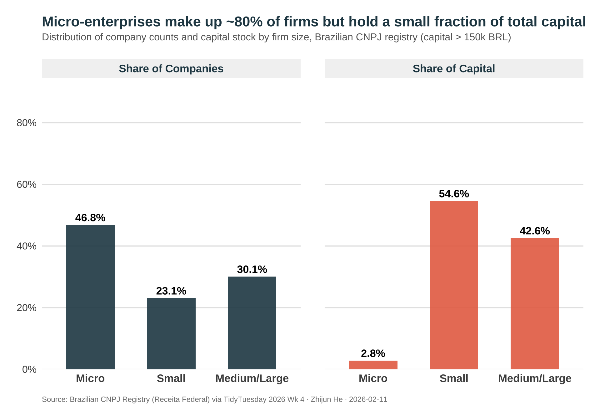
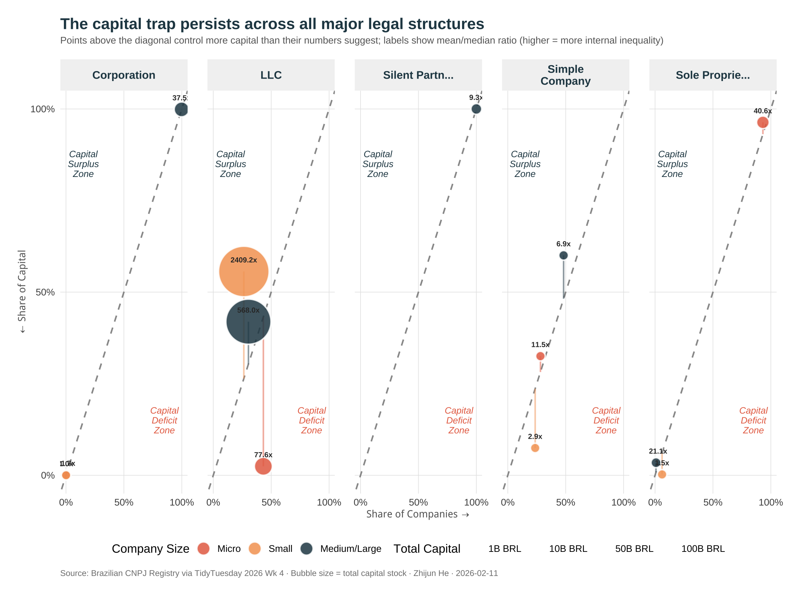

The Paradox of Brazil’s Micro-Enterprises
TidyTuesday 2026 · Week 4 · Brazilian Companies (CNPJ)
Background
Brazil’s CNPJ registry provides a rare window into the formal business sector of Latin America’s largest economy. The dataset contains companies filtered to those with capital stock exceeding 150,000 BRL (~$30,000 USD), meaning we are examining firms that have already crossed a meaningful capitalization threshold. If capital concentration exists even within this subset of more substantial businesses, it points to deeper structural patterns in how Brazilian firms accumulate resources.
In development economics, the relationship between firm size and capital accumulation matters because it reveals whether formal registration alone is enough to put small businesses on a growth trajectory, or whether structural barriers—credit constraints, regulatory burdens, market concentration—keep them from scaling up even after they enter the formal sector.
Motivation & Research Question
Across developing economies, micro-enterprises make up the vast majority of registered firms. Policymakers often celebrate high rates of business formalization as a sign of economic dynamism. But if the smallest formal businesses cannot accumulate capital at rates proportional to their numbers, that dynamism may be hollow: a large base of firms that are formally registered yet structurally unable to grow. Understanding whether this “capital trap” exists in Brazil—and how it varies by legal structure—can help distinguish between inclusive growth and mere headcount expansion.
Do micro-enterprises in Brazil face a capital trap, where they constitute the majority of registered firms yet control a disproportionately small share of total capital stock?
Data & Analysis
Show code
# Load data (comma-delimited)
companies <- read_csv(
'https://raw.githubusercontent.com/rfordatascience/tidytuesday/main/data/2026/2026-01-27/companies.csv',
show_col_types = FALSE
)
# Prepare summary data
size_summary <- companies |>
dplyr::filter(!is.na(company_size), !is.na(capital_stock)) |>
dplyr::group_by(company_size) |>
dplyr::summarise(
n_companies = n(),
total_capital = sum(capital_stock, na.rm = TRUE),
mean_capital = mean(capital_stock, na.rm = TRUE),
median_capital = median(capital_stock, na.rm = TRUE),
.groups = "drop"
) |>
dplyr::mutate(
pct_companies = n_companies / sum(n_companies) * 100,
pct_capital = total_capital / sum(total_capital) * 100,
capital_gap = pct_companies - pct_capital,
company_size = dplyr::case_when(
company_size == "micro-enterprise" ~ "Micro",
company_size == "small-enterprise" ~ "Small",
TRUE ~ "Medium/Large"
),
company_size = factor(company_size, levels = c("Micro", "Small", "Medium/Large"))
)Visualization 1: Micro-Enterprises Hold 80% of Firms but a Fraction of Capital
Show code
# Reshape for paired bar chart — separate panels by metric per professor's suggestion
plot_data <- size_summary |>
dplyr::select(company_size, pct_companies, pct_capital) |>
tidyr::pivot_longer(
cols = c(pct_companies, pct_capital),
names_to = "metric",
values_to = "percentage"
) |>
dplyr::mutate(
metric = dplyr::if_else(metric == "pct_companies", "Share of Companies", "Share of Capital"),
metric = factor(metric, levels = c("Share of Companies", "Share of Capital"))
)
# Define colors
colors <- c("Share of Companies" = "#264653", "Share of Capital" = "#e76f51")
ggplot(plot_data, aes(x = company_size, y = percentage, fill = metric)) +
geom_col(width = 0.6, alpha = 0.9) +
geom_text(
aes(label = sprintf("%.1f%%", percentage)),
vjust = -0.5,
size = 4.5,
fontface = "bold",
family = "source"
) +
facet_wrap(~metric) +
scale_fill_manual(values = colors, guide = "none") +
scale_y_continuous(
limits = c(0, 90),
breaks = seq(0, 80, 20),
labels = label_percent(scale = 1),
expand = expansion(mult = c(0, 0.05))
) +
labs(
title = "Micro-enterprises make up ~80% of firms but hold a small fraction of total capital",
subtitle = "Distribution of company counts and capital stock by firm size, Brazilian CNPJ registry (capital > 150k BRL)",
x = NULL,
y = NULL,
caption = "Source: Brazilian CNPJ Registry (Receita Federal) via TidyTuesday 2026 Wk 4 · Zhijun He · 2026-02-11"
) +
theme_minimal(base_size = 14, base_family = "source") +
theme(
plot.title = element_text(face = "bold", size = 17, color = "#264653", margin = margin(b = 5)),
plot.subtitle = element_text(size = 12, color = "gray40", margin = margin(b = 20), lineheight = 1.2),
plot.caption = element_text(size = 9, color = "gray50", hjust = 0, margin = margin(t = 15)),
axis.text = element_text(size = 12, color = "gray30"),
axis.text.x = element_text(face = "bold", size = 13),
strip.text = element_text(face = "bold", size = 13, color = "#264653"),
strip.background = element_rect(fill = "gray95", color = NA),
panel.grid.major.x = element_blank(),
panel.grid.minor = element_blank(),
panel.grid.major.y = element_line(color = "gray90"),
panel.spacing = unit(2, "lines"),
plot.margin = margin(20, 20, 20, 20)
)
The side-by-side panels make the paradox visually immediate. On the left, micro-enterprises dominate the count; on the right, their share of capital shrinks dramatically. Medium/Large firms show the exact inverse: a small slice of firms commanding the lion’s share of capital. Small enterprises sit in between, roughly proportional on both dimensions.
Visualization 2: Capital Concentration Across Legal Structures
Show code
# Calculate metrics by company size AND legal nature (top categories)
top_legal <- companies |>
dplyr::count(legal_nature, sort = TRUE) |>
dplyr::slice_head(n = 5) |>
dplyr::pull(legal_nature)
combined_summary <- companies |>
dplyr::filter(
!is.na(company_size),
!is.na(capital_stock),
!is.na(legal_nature),
legal_nature %in% top_legal
) |>
dplyr::group_by(company_size, legal_nature) |>
dplyr::summarise(
n_companies = dplyr::n(),
total_capital = sum(capital_stock, na.rm = TRUE),
mean_capital = mean(capital_stock, na.rm = TRUE),
median_capital = median(capital_stock, na.rm = TRUE),
# Capital concentration ratio (mean/median - higher = more skewed)
concentration_ratio = mean_capital / median_capital,
.groups = "drop"
) |>
# Calculate percentages within each legal nature
dplyr::group_by(legal_nature) |>
dplyr::mutate(
pct_companies = n_companies / sum(n_companies) * 100,
pct_capital = total_capital / sum(total_capital) * 100,
capital_gap = pct_capital - pct_companies
) |>
dplyr::ungroup() |>
dplyr::mutate(
company_size = dplyr::case_when(
company_size == "micro-enterprise" ~ "Micro",
company_size == "small-enterprise" ~ "Small",
TRUE ~ "Medium/Large"
),
company_size = factor(company_size, levels = c("Micro", "Small", "Medium/Large")),
legal_nature_short = dplyr::case_when(
stringr::str_detect(legal_nature, "LLC") ~ "LLC",
stringr::str_detect(legal_nature, "Individual") ~ "Individual\nEntrepreneur",
stringr::str_detect(legal_nature, "Corporation") ~ "Corporation",
stringr::str_detect(legal_nature, "Simple") ~ "Simple\nCompany",
TRUE ~ stringr::str_trunc(legal_nature, 15)
)
)
ggplot(combined_summary,
aes(x = pct_companies, y = pct_capital)) +
geom_abline(intercept = 0, slope = 1, linetype = "dashed", color = "gray60", linewidth = 0.8) +
geom_segment(
aes(xend = pct_companies, yend = pct_companies, color = company_size),
linewidth = 0.8, alpha = 0.5
) +
geom_point(
aes(size = total_capital / 1e9, fill = company_size),
shape = 21, alpha = 0.85, stroke = 1.2, color = "white"
) +
geom_text(
aes(label = sprintf("%.1fx", concentration_ratio)),
size = 2.8, fontface = "bold", color = "gray20",
vjust = -1.8, family = "source"
) +
facet_wrap(~legal_nature_short, nrow = 1) +
scale_x_continuous(
limits = c(0, 100),
breaks = c(0, 50, 100),
labels = function(x) paste0(x, "%")
) +
scale_y_continuous(
limits = c(0, 100),
breaks = c(0, 50, 100),
labels = function(x) paste0(x, "%")
) +
scale_size_continuous(
range = c(4, 25),
labels = scales::label_number(suffix = "B BRL"),
name = "Total Capital",
breaks = c(1, 10, 50, 100)
) +
scale_fill_manual(
values = c("Micro" = "#e76f51", "Small" = "#f4a261", "Medium/Large" = "#264653"),
name = "Company Size"
) +
scale_color_manual(
values = c("Micro" = "#e76f51", "Small" = "#f4a261", "Medium/Large" = "#264653"),
guide = "none"
) +
labs(
title = "The capital trap persists across all major legal structures",
subtitle = "Points above the diagonal control more capital than their numbers suggest; labels show mean/median ratio (higher = more internal inequality)",
x = "Share of Companies →",
y = "← Share of Capital",
caption = "Source: Brazilian CNPJ Registry via TidyTuesday 2026 Wk 4 · Bubble size = total capital stock · Zhijun He · 2026-02-11"
) +
annotate(
"text", x = 85, y = 15,
label = "Capital\nDeficit\nZone",
color = "#e76f51", size = 3.5, fontface = "italic",
family = "source", lineheight = 0.9
) +
annotate(
"text", x = 15, y = 85,
label = "Capital\nSurplus\nZone",
color = "#264653", size = 3.5, fontface = "italic",
family = "source", lineheight = 0.9
) +
theme_minimal(base_size = 13, base_family = "source") +
theme(
plot.title = element_text(face = "bold", size = 17, color = "#264653", margin = margin(b = 5)),
plot.subtitle = element_text(size = 10.5, color = "gray40", margin = margin(b = 15), lineheight = 1.2),
plot.caption = element_text(size = 9, color = "gray50", hjust = 0, margin = margin(t = 15)),
legend.position = "bottom",
legend.box = "horizontal",
legend.margin = margin(t = 10),
strip.text = element_text(face = "bold", size = 12, color = "#264653"),
strip.background = element_rect(fill = "gray95", color = NA),
panel.grid.minor = element_blank(),
panel.grid.major = element_line(color = "gray90", linewidth = 0.3),
panel.spacing = unit(1.5, "lines"),
axis.title = element_text(size = 11, color = "gray40"),
plot.margin = margin(20, 20, 20, 20)
) +
guides(
fill = guide_legend(order = 1, override.aes = list(size = 6)),
size = guide_legend(order = 2)
)
The capital trap is not an artifact of a single legal form. Across LLCs, Individual Entrepreneurs, Corporations, and Simple Companies, micro-enterprises (orange) consistently sit below the diagonal in the “Capital Deficit Zone”—they account for more firms than their capital share warrants. Medium/Large firms (dark teal) sit above the diagonal in every panel. The mean/median ratio labels reveal that internal inequality is highest within Corporations and LLCs, where a few large firms pull the mean far above the median.
Key Finding
The visualization reveals a stark capital paradox in Brazil’s corporate structure. Micro-enterprises constitute the largest share of registered companies yet control a disproportionately small fraction of total capital stock. Medium/Large firms show the inverse pattern—fewer in number but commanding the majority of capital. This pattern persists even after filtering for firms with capital above 150,000 BRL, suggesting that the barriers to capital accumulation for small firms are structural rather than simply a function of including marginal businesses.
Implications
For development practitioners and policymakers, this finding raises important questions. First, do micro-enterprises face credit constraints that prevent capital accumulation? Second, are compliance costs disproportionately affecting smaller firms’ ability to reinvest? Third, does Brazil’s economic structure favor consolidation over broad-based firm growth? The concentration of capital in larger firms—even within a dataset of already-formalized, reasonably capitalized businesses—suggests that Brazil’s development challenge is not just about formalizing the informal sector, but about enabling smaller formal firms to grow.